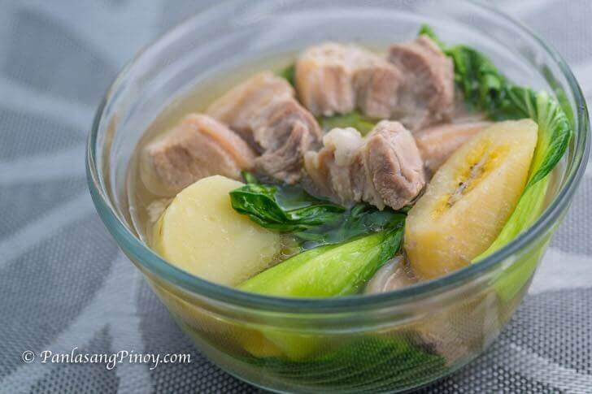

Nilaga Recipe

Description
Nilaga is a traditional meat stew or soup from the Philippines, made with boiled beef (nilagang baka) or pork (nilagang baboy) mixed with various vegetables.
Ingredients
- Pork
- Salt and Pepper
- Lettuce
- Potato
- Cabbage
- Fish Sauce
Procedure
- Put water in the casserole until it is half full. Add salt and pepper.
- Add in the pork and cover the lid. Once it is boiling, remove scum.
- Once the pork is soft, add in the chopped potato.
- Once the potato is soft, put in the lettuce.
- Add fish sauce to taste. Serve.